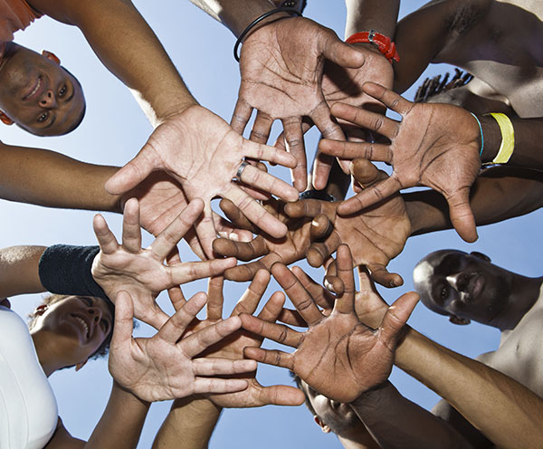
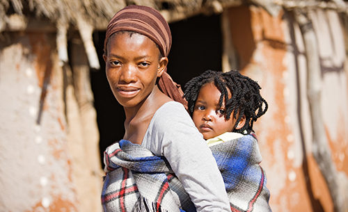

პროგრამები

ჩვენ განვსაზღვრავთ გაჭირვებულ სოფლებსა და ქალაქებს ჩვენი გამგეობის წევრებისა და რეგიონებში მცხოვრები
მოხალისეების მეშვეობით. ჩვენ მივუდგებით ამ თემებს და ვკითხავთ, დაინტერესდებიან თუ არა ჩვენთან მუშაობა.
შემდეგ ჩვენ განვმარტავთ ჩვენს პროგრამებს და მივცემთ მათ საშუალებას აირჩიონ ის, რაც მათ საზოგადოებას
ყველაზე
მეტად სჭირდება.
კორპორაციის საქმიანობა ფოკუსირებული იქნება ჩვენი უფლის, იესო ქრისტეს სწავლებებზე, რათა გამოკვებოს
აფრიკის
გაჭირვებული ბავშვები, მიუხედავად მათი წარმოშობის ქვეყნისა, და უზრუნველყოს უსახლკარო ბავშვებისთვის
თავშესაფარი და საკვები ქრისტიანული სწავლების საფუძველზე. ჩვენ შევინარჩუნებთ და დავამყარებთ უსაფრთხო
გარემოს
გაჭირვებული ბავშვებისთვის და უზრუნველვყოფთ ჯანმრთელობის ძირითად საჭიროებებს, მათ შორის ტანსაცმელსა და
საკვებს. ჩვენ ვიმუშავებთ ადგილობრივ ჯანდაცვის კლინიკებთან და საავადმყოფოებთან ნიგერიაში, კოტ-დ'ივუარში,
განაში, კენიასა და ბენინის რესპუბლიკაში, რათა დავეხმაროთ ვაქცინაციის გავრცელებას.
ჩვენ განვსაზღვრავთ გაჭირვებულ სოფლებსა და ქალაქებს ჩვენი გამგეობის წევრებისა და რეგიონებში მცხოვრები
მოხალისეების მეშვეობით. ჩვენ მივუდგებით ამ თემებს და ვკითხავთ, დაინტერესდებიან თუ არა ჩვენთან მუშაობა.
შემდეგ ჩვენ განვმარტავთ ჩვენს პროგრამებს და მივცემთ მათ საშუალებას აირჩიონ ის, რაც მათ საზოგადოებას
ყველაზე მეტად სჭირდება.
კორპორაციის საქმიანობა ფოკუსირებული იქნება ჩვენი უფლის, იესო ქრისტეს სწავლებებზე, რათა გამოკვებოს
აფრიკის გაჭირვებული ბავშვები, მიუხედავად მათი წარმოშობის ქვეყნისა, და უზრუნველყოს უსახლკარო
ბავშვებისთვის თავშესაფარი და საკვები ქრისტიანული სწავლების საფუძველზე. ჩვენ შევინარჩუნებთ და დავამყარებთ
უსაფრთხო გარემოს გაჭირვებული ბავშვებისთვის და უზრუნველვყოფთ ჯანმრთელობის ძირითად საჭიროებებს, მათ შორის
ტანსაცმელსა და საკვებს. ჩვენ ვიმუშავებთ ადგილობრივ ჯანდაცვის კლინიკებთან და საავადმყოფოებთან ნიგერიაში,
კოტ-დ'ივუარში, განაში, კენიასა და ბენინის რესპუბლიკაში, რათა დავეხმაროთ ვაქცინაციის გავრცელებას.
